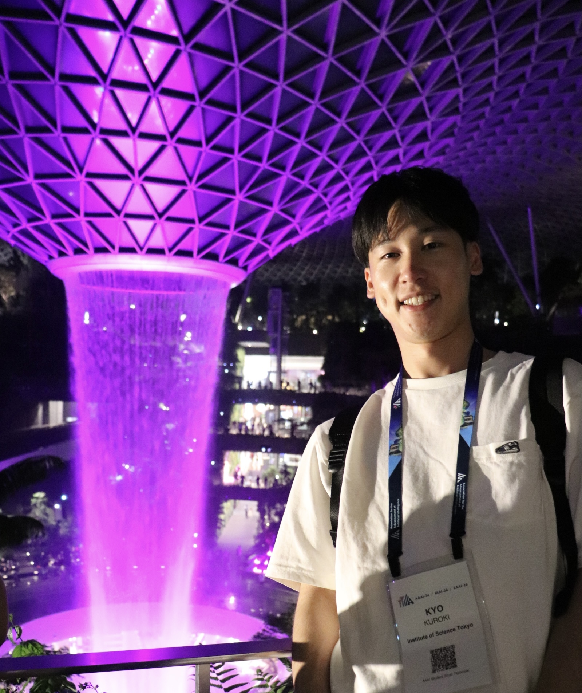

Ph.D. Student
Kyo Kuroki
Institute of Science Tokyo
AI Computing Research Unit
My research focuses on efficient deep learning systems, neural network compression, quantization, external memory, and combinatorial optimization. I am interested in making advanced AI models more efficient, scalable, and deployable under limited computational resources.
About
Profile
Education
2025 - Present
Ph.D. student, Information and Communications Engineering, Institute of Science Tokyo
2023 - 2025
M.E., Information and Communications Engineering, Institute of Science Tokyo
2019 - 2023
B.E., Electrical, Information and Physics Engineering, Tohoku University
Awards
- Outstanding Master's Student Award, Institute of Science Tokyo, 2025
Programs
2026.04 - Present
Research Fellow, Co-creative Expert Development Program for Top-level AI Research (Science Tokyo BOOST)
2025.04 - 2026.03
Research Fellow, Next-Generation Front-Runner Development Program for Integrated Knowledge and Healing (Science Tokyo SPRING)
Experience
2025.08 (1 month)
Research Intern, Sony Group Corporation
2023.08 - 2023.09 (2 months)
Research Intern, NEC R&D
Publications
Publications


Classical Thermodynamics-based Parallel Annealing Algorithm for High-speed and Robust Combinatorial Optimization
A thermodynamics-inspired parallel annealing algorithm for high-speed and robust combinatorial optimization.

Local Energy Distribution Based Hyperparameter Determination for Stochastic Simulated Annealing
A hyperparameter determination method for stochastic simulated annealing based on local energy distributions.
Contact
Get in touch
Please feel free to contact me regarding research collaboration, internship opportunities, or related academic discussions.